If you can't find a tool you're looking for, please click the link at the top of the page to "Go to old article view". Alternatively, view our Knowledge Base articles for additional help. Your feedback is important to us, so please let us know if you have comments or ideas for improvement.
Wind has the potential to become one of the leading clean energy sources. The wind energy sector is growing at an astounding rate. Over the past 7 years, the annual growth for installed wind capacity is close to 30% worldwide, reaching a power supply capacity of 94,000 MW annually.1 The situation in the USA is not different. Over the same period, wind power has grown over 20% annually, currently reaching a capacity of 21,017 MW.2 However, in terms of the total share among the whole energy market, the wind energy sector can be considered to be still in the infancy period. In the USA, wind energy only accounts for 0.49% of total supply.3 In some European countries, the share of wind energy is relatively higher compared with the USA. Germany, Spain and Denmark take a leading role in generation of electricity from wind-powered turbines.4 In Spain, the electricity from wind power supplies 4% of the total demand.5
In order to estimate the wind power resource for a site, statistical models have been proposed and utilized for analysing the wind characteristics. A major focus on statistical analysis of wind characteristics is the identification of the probability density function governing the wind attributes. Research is directed at finding out the most appropriate distribution for the characterization of wind speed and parameters. The statistical distributions based on two-parameter Rayleigh and Weibull models are by far the most widely adopted for representing the wind speed.6 There are other theoretical distributions suitable for modelling the wind speed, such as square root normal, lognormal three-parameter Weibull, inverse Gaussian and generalized extreme value.7–11 Zhou et al. compared the effectiveness of multiple statistical distributions for characterizing the wind speed for potential North Dakota sites, and used a comprehensive evaluation metric for goodness-of-fit.12
Another aspect of the assessment of wind energy is the analysis of the wind direction distribution. Incorporating the wind direction into the statistical analysis enables us to describe the variation of harvesting direction for a wind turbine so that the system efficiency can be improved and costs can be reduced. Some of the important statistical distributions for representing the wind direction are uniform, cardioid, wrapped Cauchy, and wrapped Normal distributions, along with von Mises distribution.13 In literature, there are several studies for analysing the wind direction. To cite an instance, Carta et al. used a mixture of the von Mises distributions to characterize the wind direction for Canary Islands, Spain.14
In the past, some studies were directed at constructing bivariate distribution models for representing wind speed and direction simultaneously. However, compared with the statistical models representing wind speed only, these models are less common. Smith discussed using the bivariate Normal density function for predicting the distribution of wind speed and direction.15 Some researchers took another approach and used an isotropic Gaussian model for characterizing wind speed and direction.16–18 Garcia-Rojo developed an algorithm for identifying a discrete bivariate statistical distribution based on the Measure-Predict-Correct method for predicting the long-term wind climate.19 Weber generalized the isotropic Gaussian model and developed a more flexible model by lifting the equal variance assumption, which is called the anisotropic Gaussian model.20 On the other hand, Johnson and Wehrly developed a method for representing wind speed and direction by obtaining angular-linear (AL) distributions.21 Carta et al. conducted research on the comparison of AL models with anisotropic and isotropic Gaussian distribution models and reported that the joint distributions based on the AL model have a higher explanatory power.22
In this paper, we compare three major approaches, namely, AL approach,21 the Farlie-Gumbel-Morgenstern (FGM) families'-based approach23–25 and anisotropic lognormal approach, for constructing the bivariate joint distribution to describe the characteristics of wind speed and direction simultaneously. Our objective is to compare and evaluate the three approaches for obtaining the bivariate distribution of wind speed and direction. In AL- and FGM-based approaches, we model the wind speed distribution using a mixture of singly truncated below Normal and Weibull (TNW) distribution22 and a mixture of three-parameter inverse Gaussian and lognormal (IGL) models, and the wind direction distribution using a mixture of von Mises distributions.
In the next section, we introduce the approaches for constructing the joint probability density functions. We furnish the mathematical details associated with the construction process. Thereafter, we describe the data source and methodology for finding the parameters of the underlying statistical distributions. Then, we present the results and provide necessary discussion on the observations. We wrap up the study by pointing out future research directions and presenting concluding remarks in the final section.
2. APPROACHES FOR CONSTRUCTING JOINT PROBABILITY DENSITY FUNCTIONS
2.1. Anisotropic lognormal approach
This approach is developed from the concept of anisotropic Gaussian model20 in which we keep all the hypotheses of the anisotropic Gaussian model, except for the Gaussian distribution assumption. As the name implies, the difference between the anisotropic Gaussian model and anisotropic lognormal model lies in the underlying distribution for the lateral and longitudinal components. In the anisotropic Gaussian model, the Gaussian distribution is assumed for these distributions; whereas in our model, we use the three-parameter lognormal distribution, because the lognormal distribution is shown to be an effective distribution for representing the wind speed for the selected North Dakota sites.12
The schematic representation of the prevailing wind direction and the axes is shown in Figure 1. The symbol θ indicates the angle of a given wind vector with the north axis; θD represents the prevailing wind direction with the north axis; θ′ denotes the angle of a wind vector angle with the axis of prevailing wind direction; y′ and x′ denote the longitudinal and lateral axes with respect to prevailing wind direction, respectively. According to the proposed model, the longitudinal and lateral components are described with equations (1) and (2) that are provided below:
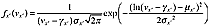(1)
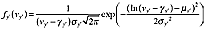(2)
where is the lateral component of the wind speed, 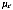 is the mean of lognormal lateral wind speed distribution, 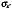 is the variance of the lognormal lateral wind speed distribution, 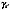 is the location parameter of the lognormal lateral wind speed distribution, 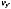 is the longitudinal component of the wind speed, 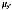 is the mean of the lognormal longitudinal wind speed distribution, 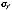 is the variance of the lognormal longitudinal wind speed distribution and 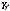 is the location parameter of the lognormal longitudinal wind speed distribution.
Note that, according to the hypothesis outlined above, although the parameter of the lateral wind speed distribution (i.e. μx) is zero, it does not translate into a zero mean for the lognormal distribution. This is because the mean of the lognormal distribution is expressed as 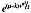, which should be a positive value regardless of the values of μ, σ and γ.
The lateral and the longitudinal components are independent. Based on this assumption, the joint distribution is simply the multiplication of these two distributions. We can write the joint distribution as follows:
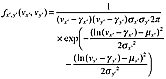(3)
Performing a polar coordinate transformation (i.e. replacing with vsinθ′ and with vcosθ′), where θ′ is the angle of the prevailing wind direction with the north axis, and v is the wind speed, we obtain the following expression for the joint distribution function.
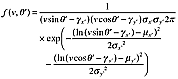(4)
In order to obtain the marginal distributions of wind speed or wind direction, the joint probability distribution function is integrated with respect to the variable representing wind direction (i.e. θ′) or wind speed, respectively. Unfortunately, no closed form solution is available, and thus, numerical solutions should be brought forward to obtain the marginal distributions.
In case of multimodality, it is possible that there might be more than one prevailing wind direction. In order to address this issue, the entire wind direction spectrum can be divided into several sectors, and the prevailing wind direction for each sector needs to be found. This approach increases the explanatory model of the anisotropic lognormal model at the expense of the increased complexity of constructing the model. In this study, however, we take a simplified approach used by Carta et al.,22 which assumes a single prevailing wind direction for the entire wind direction spectrum.
2.2. AL approach
The AL approach introduced by Johnson and Wehrly21 is shown to be a suitable tool for modelling the joint probability distribution of wind speed and direction. The concept of this approach is introduced here. The probability distribution for the AL distribution is defined as:
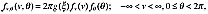(5)
where g(.) is the probability density function of the circular variable ξ, and fv(v) is the probability distribution function of the wind speed, and the fthgr;(θ) is the probability distribution function of the wind direction. The definition of the circular variable ξ is given by the following equation,21
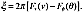(6)
As previously mentioned, for the wind direction and ξ parameter, a mixture of von Mises distributions is used. Two variations of the approach were considered to represent these variables. The difference between the two variations lies in the number of von Mises distributions that are used. In the first approach, a mixture of three von Mises distributions is used for representing both variables. The second approach utilizes a mixture of six von Mises distributions for representing the same variables.
For estimating the wind speed, we use two models (i.e. TNW and IGL). TNW model was used by Carta et al.22 and thus, it is included in our study for comparison. On the other hand, Zhou et al. reported that both three-parameter inverse Gaussian and lognormal distributions are generally successful for characterizing the wind speed distribution for the same dataset used by this study.12 Therefore, it is believed that a mixture of these two distributions might be suitable for modelling the wind speed. In brief, under the AL approach, two methods of constructing bivariate joint distribution, namely AL-TNW and AL-IGL, are investigated. Additional details on the procedure for estimating the parameters are given, and corresponding adjusted R2 and root mean square error (RMSE) values are provided in a following section.
2.3. FGM approach
FGM is a classical and straightforward approach to construct the joint distribution function based on the marginal cumulative distribution functions.23–25 The general concept can be expressed as follows,
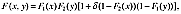(7)
where F(x,y) represents the cumulative distribution function of the bivariate distribution, F1(x) denotes the cumulative distribution function of the first variable (i.e., the wind speed in our case), F2(y) denotes the cumulative distribution function of second variable (i.e., the wind direction in our example) and δ denotes the correlation coefficient, satisfying |δ| ≤ 1.23
In this approach, the statistical independency between the wind speed and direction is not assumed as opposed to the anisotropic model. The drawback is that relatively higher δ values reduce the validity of the model. Schucany et al. showed that the correlation coefficient between X and Y should not exceed 1/3, and in many cases such as the bivariate exponential distribution, the maximum value of the correlation coefficient should be 0.25.26 Certainly, we will check δ values for all selected sites in this study. As mentioned previously, for this approach we also study the two different models (i.e., TNW and IGL) for describing the wind speed distribution, and we use the mixture of von Mises distributions for representing the wind direction distribution. In brief, under FGM approach, two methods of constructing bivariate joint distribution, namely FGM-TNW and FGM-IGL, are investigated.
2.4. Comparison of methods—fit performance
In our study, we use adjusted R2 and RMSE statistics as fit performance to compare different methods. The adjusted R2 statistic is a bin-specific measure, and it aims to measure the strength of the linear relationship between the expected and observed frequencies of the bins. It can be expressed in the following equation,
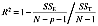(8)
The term SST denotes the total sum of squares. It reflects the total difference between the observed and average frequencies for all of the bins. SSE denotes the sum of squared error, which measures the total difference between the observed and expected frequency for all the bins. N is the total number of non-empty bins, and p is the number of parameters estimated for that particular distribution. The adjusted R2 takes values between 0 and 1. The higher the adjusted R2 value is, the more likely it is that the measured data follows the specified distribution. This metric is commonly used for comparison of various frequency distribution models in wind energy research literature.27
On the other hand, RMSE is a simpler metric which is also bin-specific. The RMSE takes any non-negative value. Unlike the adjusted R2 values, a higher RMSE value indicates a poorer fit. It can be calculated as follows:
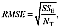(9)
The term NT is the total number of the bins. The adjusted R2 can be considered to be a more precise goodness-of-fit metric, because it uses the number of non-empty bins in the equation, whereas the RMSE value makes use of the total number of bins as a parameter in the equation.
3. METHODOLOGY
The reason for using the mixture of von Mises distributions for representing the wind direction in AL and FGM approaches is to combine the individual explanatory power of the prominent statistical distributions by creating a synergy and possibly curbing their weaknesses by counterbalancing each other.
3.1. Data source
North Dakota has the greatest wind energy potential among the lower 48 states in the USA. A comprehensive evaluation of wind power was conducted by the North Dakota Division of Community Services along with the regional utility companies during the period between 1994 and 1997. Multiple sites that were considered to have large wind energy development potential were chosen. The wind speeds and directions were measured and captured using anemometers and wind direction sensors at fixed positions having different heights. The data were recorded continuously and averaged over every hour for obtaining the hourly values for the wind attributes. Among the sites that are available, we choose four different sites, namely, Alfred, Green River (Green R), Olga and Ray/Wheelock (Ray W) to be included in this research. These four sites are selected based on the representation of North Dakota geography. The locations of the sites are shown in Figure 2. More information on latitude, longitude and elevation is presented in Table I. In this study, we use the wind speed and direction recorded at the height of 10 m for statistical analysis as recommended by the World Meteorological Organization.28 For each selected site, a complete 2-year wind dataset is available for the period of January 1996–December 1997, but the record before 1996 is not complete. Therefore, only those 2-year datasets are adopted in this study for the purpose of consistency. Also, the incomplete records are not included to avoid any possible bias on the seasonal effect.
Geographical locations of four selected sites in North Dakota, USA.
Table I. Geographical information of four North Dakota sites.
Site
Latitude
Longitude
Elevation
Alfred
46°35′15″
99°00′46″
631 m
Green R
47°04′05″
102°55′38″
818 m
Olga
48°46′48″
98°02′16″
475 m
Ray W
48°15′57″
103°11′52″
750 m
3.2. Identification of distribution parameter values
After deciding on the bivariate distributions governing the wind speed and direction, the next step is identifying the values of the parameters belonging to the selected distributions. For this purpose, we use the least squares approach for finding the distribution parameters in AL and FGM models. This approach is well known and widely used by researchers in a variety of areas, including wind energy research. For the anisotropic model, we use a statistical software package to find the lognormal distribution parameters of the longitudinal and lateral components of the wind speed. In the following sections, we detail the procedures for obtaining the parameter values.
3.3.1. Anisotropic lognormal model
In the anisotropic lognormal method, the first step is to find the prevailing wind direction. Using this information, it is possible to decompose the wind velocity vector into the longitudinal and the lateral components. In order to find out the prevailing wind direction, the following equation is used14:
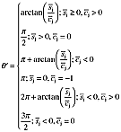(10)
where 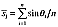, , θ′ is the prevailing wind direction and θi represents the angles that the wind speed vectors form with y-axis direction. Based on the calculations, the prevailing wind directions for Alfred, Green R. Olga and Ray W are found to be 271.08°, 263.93°, 308.48° and 219.11° respectively.
The next step is to fit a distribution for these wind speed components. A three-parameter lognormal distribution is used for this purpose. In order to analyse the data, we use the @Risk 5.5 Microsoft ExcelTM (Palisade Corporation, Ithaca, NY, USA) add-in module that is a part of the Palisade Decision Tool suite. After getting the parameters for the lognormal distribution, based on the independency assumption, the probability density functions for the lateral and longitudinal components are multiplied to obtain the joint distribution. In the last step, a polar coordinate transformation is performed to represent the joint distribution in terms of the wind speed and direction.
3.3.2. Wind speed models
The TNW model for the wind speed can be expressed with the following probability distribution function:
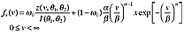(11)
where 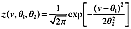,
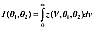, ω0, θ1 and θ2 are the weight and parameters of the singly truncated below Normal distribution, and α and β are the shape and scale parameter of the Weibull distribution, respectively. Note that the total weight of the singly TNW distribution is equal to 1, as indicated by the ω0 and 1–ω0, respectively.
To find the values of the parameters, namely ω0, θ1, θ2, α and β, the least squares optimization is conducted based on the cumulative frequency distribution values. For this purpose, 36 bins spanning the entire wind speed spectrum having equal width are constructed, and the corresponding cumulative probabilities are calculated. Based on these cumulative probabilities, the following objective function is minimized:
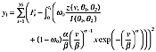(12)
where y1 is the objective function value, Fi's are the cumulative probabilities, ti is the upper bound for the ith bin, the lower bounds for ω0, α and β are 0 (i.e. they are non-negative), and the upper bound for the ω0 parameter is 1. For this minimization problem, the fmincon module in the MatlabTM (The Mathworks Inc., Natick, MA, USA) optimization toolbox is used. Basically, the module relies on a sequential quadratic programming method to solve non-linear constrained optimization problems.30 We assume the initial value for w0 to be 0.5, and for finding the θ1, θ2, α and β parameters, we use the maximum likelihood estimates for the mean and variance of the Gaussian distribution, and the shape and scale parameters of the two-parameter Weibull distribution, respectively.
The second way of representing the wind speed distribution is the IGL model. The probability density function of this mixture distribution is given in the following equation.
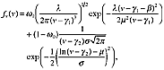(13)
where ω0,β, γ and γ1 are the weight, shape, scale and location parameters of the inverse Gaussian distribution, respectively. Similarly, μ, σ and γ2 represent the mean, standard deviation and location parameter of the lognormal distribution, respectively. The parameters ω0, β, γ, μ and σ are non-negative, and the upper limit for ω0 is 1.
In order to find the parameters of the above distribution, the following objective function is minimized using the optimization module of the MatlabTM software package.
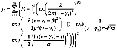(14)
where y2 is the objective function value, and Fi's are the cumulative probabilities that are calculated based on the equal width wind speed bins. The initial parameters are estimated using a similar procedure as outlined in the case of TNW distribution. Table II shows the parameters obtained for both TNW and IGL distributions according to the wind speed data for all selected sites.
Table II. TNW and IGL model parameters for wind speed data at different sites.
Parameter
Site
Alfred
Green R
Olga
Ray W
IGL = inverse Gaussian and lognormal; TNW = truncated below Normal and Weibull.
TNW
ω0,θ1,θ2
0.782, 4.725, 4.734
0.365, 3.885, 1.317
0.144, 3.252, 0.933
0.297, 4.214, 1.591
α, β
3.066, 5.997
2.092, 7.168
1.91, 5.899
2.177, 7.404
IGL
ω0,γ, β, γ1
0.082, 8.439, 72.194, −7.660
0.827, 9.147, 76.385, −3.325
0.739, 7.922, 65.811, −2.098
0.977, 8.956, 75.816, −2.996
α, β, γ2
2.379, 0.294, −4.956
2.108, 0.122, −4.462
3.021, 0.058, −17.992
1.65, 0.087, −1.944
3.3.3. Wind direction model
For the wind direction distribution, we use a mixture of von Mises distributions. The von Mises distribution is widely used in directional statistics for representing the circular variables. It can also be used for investigating the wind direction as well.14,31 As previously mentioned, there are two cases of variations. In the first case, we combine a mixture of three von Mises distributions. The second case involves using six different von Mises distributions for characterizing the wind direction. The decision on the number of von Mises distributions is mostly made based on the number of peaks of the wind direction histogram. Upon examination of the wind direction histograms, it is found that the number of local peaks varies between three and six. As such, we use two different scenarios for representing the wind direction. Based on those distributions, the probability density function of the composite distribution function can be represented as follows:
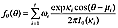(15)
where ωi, μi and κi values are the weight, mean and concentration parameter of the ith von Mises distribution, respectively, I0 represents the modified Bessel function of order zero and t might take the value of either 3 or 6 depending on the model. The concentration parameter values are non-negative, the weights are non-negative, and the sum of the weights are equal to 1 (i.e. 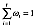). The entire wind direction spectrum is divided into 36 sectors, each of which spans 10°, and the sum of square of the difference between the cumulative probability distribution based on observations and theoretical distribution is minimized.
In order to obtain the initial values, the entire wind direction spectrum is divided into either three or six equal-width sectors with each having a span of either 60° or 120°. The initial values for wiparameters are obtained by the following equation:
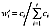(16)
where i is the index of the sector, 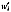 is the initial value assigned for the wi and ci is the total number of data points in that particular sector. To find the initial values of the μi values, we follow a similar approach. We divide the wind direction spectrum into either three or six equal intervals, and use equation (10) for each sector to obtain the initial values for the μi parameters.
To obtain the initial values for the κi, we create the sectors and assign the initial values for κi by solving the following equation for each sector.14
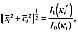(17)
where , 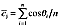, i is the index of sector, I1(.) denotes the modified Bessel function of first-kind order 1, I0 is the modified Bessel function of the first kind with order 0, n is the total number of data points in that sector, θidenotes the angle of the wind direction with respect to the north axis and denotes the initial parameters assigned for concentration parameters. Table III shows the parameters obtained for the mixture of three von Mises distributions according to the wind direction data for all selected sites. Similarly, Table IV presents the same set of parameters obtained for the mixture of six von Mises distributions.
Table III. Parameters of the mixture of three von Mises distributions for wind direction.
Parameter
Site
Alfred
Green R
Olga
Ray W
ω1, μ1, κ1
0.196, 0.632, 1.681
0.578, 2.179, 0.645
0.258, 0.233, 4.517
0.260, 1.150, 6.186
ω2, μ2, κ2
0.378, 2.842, 1.722
0.024, 5.491, 82.57
0.52, 3.473, 0.929
0.392, 3.513, 1.341
ω3, μ3, κ3
0.426, 5.049, 2.759
0.398, 24.748, 1.882
0.222, 5.106, 5.321
0.348, 1.341, 1.017
Table IV. Parameters of the mixture of six von Mises distributions for wind direction.
Parameter
Site
Alfred
Green R
Olga
Ray W
ω1, μ1, κ1
0.173, 0.212, 3.385
0.253, 0.232, 1.266
0.268, 0.272, 4.582
0.084, 0.604, 7.994
ω2, μ2, κ2
0.060, 1.365, 11.624
0.121, 1.694, 7.546
0.058, 1.693, 7.125
0.175, 1.177, 17.227
ω3, μ3, κ3
0.034, 2.079, 10.509
0.106, 2.483, 11.242
0.064, 2.581, 10.529
0.126, 2.02, 5.376
ω4, μ4, κ4
0.332, 2.956, 2.399
0.17, 3.466, 5.362
0.177, 3.375, 4.584
0.289, 3.451, 4.723
ω5, μ5, κ5
0.241, 4.663, 5.619
0.271, 4.626, 5.277
0.401, 4.913, 2.244
0.189, 4.572, 7.645
ω6, μ6, κ6
0.160, 5.413, 11.041
0.080, 5.475, 24.85
0.033, 5.213, 24.673
0.138, 5.634, 3.514
3.3.4. Parameters for AL joint distributions
After finding the parameters pertaining to the angular and linear component of the distributions, the next step is combining these two distributions to construct a joint bivariate distribution to fit the joint profile determined by the wind speed and direction simultaneously. For this purpose, we use equation (6).
After obtaining the ξ values for each pair of observations based on the difference of cumulative distribution functions, another combined distribution consisting of either three or six different von Mises distributions is fitted using the approach outlined in the previous sections. The sum of the square of the differences between the theoretical and actual cumulative distribution probabilities is minimized. Then, the probability density function of the overall joint distribution is obtained based on equation (5). Tables V and VI summarize the AL distribution parameters for the AL-TNW and AL-IGL methods, respectively, using a mixture of three von Mises distributions. Similarly, Tables VII and VIII tabulate the results for the case of using the mixture of six von Mises distributions. The parameters ω, μ and κ denote the weight, mean and concentration parameter of the ith von Mises distribution fitted for ξ, respectively.
Table V. Parameters of the joint distribution based on AL-TNW method for the three-von Mises distribution case.
Parameter
Site
Alfred
Green R
Olga
Ray W
AL = angular-linear; TNW = truncated below Normal and Weibull.
ω, μ, κ1
0.482, 0.312, 4.217
0.422, 0.822, 2.138
0.272, 0.721, 2.922
0.437, 0.42, 2.182
ω, μ, κ
0.233, 4.172, 4.914
0.214, 2.028, 2.325
0.445, 3.29, 3.248
0.245, 4.112, 1.627
ω, μ, κ
0.285, 5.821, 1.92
0.364, 5.184, 4.219
0.283, 5.783, 2.77
0.318, 5.924, 3.502
Table VI. Parameters of the joint distribution based on AL-IGL method for the three-von Mises distribution case.
Parameter
Site
Alfred
Green R
Olga
Ray W
AL = angular-linear; IGL = inverse Gaussian and lognormal.
ω, μ*1, κ1
0.422, 1.196, 3.389
0.351, 1.182, 2.812
0.422, 0.878, 3.292
0.521, 1.212, 2.217
ω, μ*2, κ
0.182, 4.231, 5.422
0.178, 4.055, 0.293
0.334, 4.212, 4.215
0.082, 4.036, 1.485
ω, μ*3, κ
0.396, 5.926, 4.283
0.471, 5.218, 5.875
0.244, 5.95, 0.215
0.397, 5.862, 3.829
Table VII. Parameters of the joint distribution based on AL-TNW method for the six-von Mises distribution case.
Parameter
Site
Alfred
Green R
Olga
Ray W
AL = angular-linear; TNW = truncated below Normal and Weibull.
ω, μ, κ1
0.172, 0.182, 3.385
0.255, 0.514, 2.867
0.192, 1.011, 3.018
0.247, 0.42, 3.124
ω, μ, κ
0.193, 1.004, 3.574
0.174, 1.64, 2.756
0.14, 2.19, 3.473
0.014, 1.004, 3.348
ω, μ, κ
0.287, 2.282, 1.45
0.012, 2.264, 3.469
0.122, 3.283, 4.12
0.166, 1.544, 3.708
ω, μ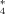, κ
0.144, 3.527, 2.396
0.213, 3.177, 2.394
0.161, 4.233, 3.608
0.114, 2.4, 3.091
ω, μ, κ
0.062, 4.693, 3.323
0.1213, 4.474, 2.542
0.137, 5.305, 3.108
0.228, 3.812, 1.827
ω, μ, κ
0.142, 5.734, 2.713
0.255, 0.514, 2.867
0.248, 6.048, 2.253
0.231, 5.315, 2.153
Table VIII. Parameters of the joint distribution based on AL-IGL method for the six-von Mises distribution case.
Parameter
Site
Alfred
Green R
Olga
Ray W
AL = angular-linear; IGL = inverse Gaussian and lognormal.
ω, μ, κ1
0.221, 0.426, 4.33
0.221, 0.165, 2.636
0.187,0.001, 2.723
0.274, 0.352, 2.767
ω, μ, κ
0.148, 1.241, 5.587
0.178, 1.05, 3.132
0.185, 1.058, 3.125
0.263, 1.666, 2.392
ω, μ, κ
0.15, 2.186, 3.487
0.115, 2.008, 4.392
0.119, 2.15, 3.803
0.079, 2.807, 2.709
ω, μ, κ
0.201, 3.312, 2.736
0.173, 3.151, 3.887
0.142, 3.238, 3.279
0.214, 4.003, 2.04
ω, μ, κ
0.083, 4.48, 3.422
0.193, 4.314, 3.515
0.19, 4.308, 2.985
0.17, 5.293, 2.866
ω, μ, κ
0.197, 5.769, 2.994
0.12, 5.483, 3.91
0.176, 5.456, 3.404
0.0001, 5.609, 3.075
3.3.5. Constructing FGM joint distributions
For constructing the joint distributions based on the FGM approach, a similar procedure is followed as compared with the AL approach. In other words, for the wind speed, the TNW and IGL models are used; for the wind direction portion, the mixture of six von Mises distributions is adopted. For the purpose of brevity, the mixture of three von Mises distributions is omitted here. Another reason for using the mixture of three von Mises distributions only for the AL-based approaches is to create a fair playground for AL- and FGM-based approaches. For the FGM-based approaches, we use a mixture of six von Mises distributions for modelling the wind direction. In the AL-based approach, in one of the scenarios, we use a mixture of three von Mises distributions for modelling the wind direction, and another three for modelling the circular variable ξ, making a total of six von Mises distributions which puts it on par with the FGM-based distributions in terms of the total number of von Mises distributions used in the model. The difference between the AL and FGM approaches is on how the joint distribution is constructed. In brief, the FGM is simpler. Instead of incorporating the new distribution function into the model, it makes use of equation (7). However, as previously mentioned, one limitation of the approach is that the correlation coefficient between the two variables (e.g. the wind speed and direction for this study) should not exceed 1/3. For many cases, the bound on the correlation coefficient is further reduced. To cite an instance, for the bivariate exponential distribution case, this bound is reduced to 0.25.23
The calculation of the correlation between wind speed and direction presents a challenge here, as one of the variables is linear (i.e. the wind speed), and the other one is directional (i.e. the wind direction). In this regard, we adopt a non-traditional approach proposed by Mardia32 to calculate the correlation coefficient between these two variables;
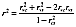(18)
where rvc= corr(v,cos θ), rvs= corr(v,sin θ) and rcs= corr(cos θ,sin θ). The correlation coefficients (r2) for Alfred, Green R, Olga and Ray W are 0.225, 0.182, 0.260 and 0.174, respectively. It can be seen that the moderate correlation coefficients render FGM models suitable for our research on joint distribution.
4. RESULTS AND DISCUSSION
A comparison between different methods of constructing joint distributions is performed based on the adjusted R2 and RMSE values as a measure of fit. As previously discussed, the adjusted R2 value measures the explanatory power of the model by constructing the ratio of the sum of square errors to the total sum of squares. A high-adjusted R2 value indicates that the model is powerful for predicting the dependent variable. There are three different adjusted R2 values calculated for each site and joint distribution model. The first two are computed using the individual wind direction and speed for the case of AL and FGM models. For the case of anisotropic distribution, the marginal distribution is utilized. For that reason, these values can be considered as one-dimensional adjusted R2 values. The last set of adjusted R2 values is computed using the joint distributions. The adjusted R2 metric is bin-specific, and the bin construction is required. For this purpose, we constructed the bins for both wind speed and direction. For the wind speed, the bin size is fixed at 0.5 m s−1, whereas for the direction, the bin size is specified as 10°.
On the other hand, the RMSE values are only calculated for the joint distributions of each site. This is because the adjusted R2 values are already calculated based on individual wind speed and direction distributions, and this study is more focused on joint distributions. The bin size is kept same as in the calculation of the adjusted R2 values.
4.1. Adjusted R2 values based on wind speed and wind direction
Tables IX and X depict the adjusted R2 values for the models of wind speed and wind direction for all the sites. Overall, it can be observed that the wind speed distribution has a higher adjusted R2 for each site as compared with that of wind direction. The relative inefficiency of the von Mises distribution for representing the wind direction suggests that further improvement is called for on the wind direction distributions.
Table IX. Adjusted R2 values based on distribution of wind direction.
a Constructed using a mixture of 3 von Mises distributions.
b
b Constructed using a mixture of 6 von Mises distributions.
AL = angular-linear; FGM = Farlie-Gumbel-Morgenstern; IGL = inverse Gaussian and lognormal; TNW = truncated below Normal and Weibull.
Alfred
0.947
0.922
0.940
0.993
0.940
0.993
0.879
Green R
0.991
0.995
0.991
0.995
0.991
0.994
0.921
Olga
0.994
0.994
0.994
0.996
0.994
0.994
0.962
Ray W
0.992
0.998
0.992
0.998
0.992
0.997
0.967
The histograms of the wind direction for Alfred, Green R, Olga and Ray W are given in Figure 3(a)–(d), respectively. In each figure, AL-IGL_3, AL-IGL_6, FGM-IGL and anisotropic distributions are presented since the choice of wind speed distribution has little effect on the distribution of wind direction. The same wind direction distribution model is used for the AL and FGM approaches, and it provides a significantly better fit compared with the anisotropic model. In the meantime, the histograms on wind speed distribution are shown in Figure 4(a)–(d) for Alfred, Green R, Olga and Ray W, respectively. Similarly, for the wind speed, both TNW and IGL models outperform the anisotropic model. The goodness of fit advantage, however, becomes smaller as compared with the case of wind direction. Note that in the wind speed histogram for site Green R, an anomaly peak can be observed. It is speculated that the numerical integration close to infinite endpoints contributes to the spike.
Wind direction histograms and wind direction probability density functions (PDFs) for sites (a) Alfred, (b) Green R, (c) Olga, and (d) Ray W, respectively. AL = angular-linear; FGM = Farlie-Gumbel-Morgenstern; IGL = inverse Gaussian and lognormal.
Wind speed histograms and wind speed probability density functions (PDFs) for sites (a) Alfred, (b) Green R, (c) Olga, and (d) Ray W, respectively. AL = angular-linear; FGM = Farlie-Gumbel-Morgenstern; IGL = inverse Gaussian and lognormal; TNW = truncated below Normal and Weibull.
4.2. Joint distributions
Bivariate histograms based on the wind speed and direction distributions need to be created for the computation of the adjusted R2 and RMSE values. After creating a two-dimensional binning structure, the joint probability density function needs to be integrated to obtain the expected frequencies for each bin. In Table XI, the adjusted R2 values based on the joint distributions are provided for each site. Similarly, the RMSE values are provided in Table XII. Meanwhile, for the purpose of brevity, we only show the bivariate histogram and fitted joint distributions for the Olga site in Figure 5 (a)–(d). In particular, the figures only include the joint distributions made by the FGM and AL methods based on the mixture of six von Mises distributions using the IGL approach as well as anisotropic approach. In general, the trend of the bivariate histogram profile is well captured by all the three methods. Also, it can be seen that the anisotropic approach lacks the capability to describe the details as compared with the AL and FGM approaches. This is confirmed by the adjusted R2 and RMSE values in Tables XI and XII. On the other hand, if the adjusted R2 values in Table XI are compared with those in Tables IX and X, it is obvious that the goodness-of-fit index deteriorates for bivariate joint distributions constructed by the AL and FGM approaches as compared with the one-dimensional counterpart. It suggests that further research on joint distributions is needed to improve goodness of fit.
(a) Bivariate wind speed and direction histogram, (b) fitted anisotropic lognormal distribution, (c) fitted AL-IGL joint distribution, and (d) fitted FGM-IGL joint distribution for the site of Olga. AL = angular-linear; FGM = Farlie-Gumbel-Morgenstern; IGL = inverse Gaussian and lognormal.
Table XI. Adjusted R2 values based on joint distribution.
Site
AL-TNW_3
AL-IGL_3
AL-TNW_6
AL-IGL_6
FGM-TNW
FGM-IGL
Anisotropic
AL = angular-linear; FGM = Farlie-Gumbel-Morgenstern; IGL = inverse Gaussian and lognormal; TNW = truncated below Normal and Weibull.
Alfred
0.868
0.881
0.874
0.887
0.798
0.782
0.748
Green R
0.811
0.810
0.815
0.815
0.820
0.812
0.773
Olga
0.863
0.860
0.865
0.862
0.862
0.860
0.841
Ray W
0.852
0.853
0.870
0.871
0.859
0.860
0.794
Table XII. Root mean square error values based on joint distribution.
Site
AL-TNW_3
AL-IGL_3
AL-TNW_6
AL-IGL_6
FGM-TNW
FGM-IGL
Anisotropic
AL = angular-linear; FGM = Farlie-Gumbel-Morgenstern; IGL = inverse Gaussian and lognormal; TNW = truncated below Normal and Weibull.
Alfred
8.198
7.952
8.154
7.730
9.451
9.762
10.729
Green R
12.017
12.167
11.994
11.971
11.823
12.069
19.016
Olga
10.523
10.438
10.225
10.328
10.327
10.377
11.295
Ray W
4.976
5.033
4.265
4.266
4.261
4.262
12.316
4.3. Discussion
As shown from Tables IX and X, the anisotropic lognormal model significantly lags behind the other models in terms of the adjusted R2 and RMSE values calculated from the individual distributions of the wind speed and direction. It can be stated that in some instances, the adjusted R2 values are more than halved when the anisotropic lognormal model is used instead of the AL or FGM models. For distributions based on the wind speed, the relative inefficiency of the anisotropic model compared with the other two models is also observed but to a lesser extent. In terms of the adjusted R2 values based on the joint distribution, the same conclusion holds true. For instance, the relative difference between the AL-IGL_6 and anisotropic distributions is more than 18.7% for the Alfred site. However, these differences are smaller for Olga compared with the other sites. The relative difference is less than 3% between the AL-TNW_6 model and the anisotropic model for that site. The same observation also holds true in terms of the RMSE values. For example, for Green R site, the RMSE values are increased by more than 50%, when the anisotropic model is used instead of FGM- or IGL-based approaches.
The comparison between the AL and FGM joint distributions provides interesting results. The relative differences are nearly negligible for the univariate distributions of both the wind direction and speed. For the joint distributions, slightly different results are observed. In general, the AL approach featuring six von Mises distributions provides slightly better results as compared with the FGM approach for all instances but one, in terms of the adjusted R2 values, at the expense of the computation time and complexity of model building. Compared with the AL distributions featuring three von Mises distributions, in general, the FGM-based distributions yield slightly better results. However, for the Alfred site, the AL distributions outperform the FGM distribution with a difference of more than 7% in terms of the adjusted R2 values. Similar observations can also be made based on the RMSE values.
Table IX shows that the wind direction distribution that is based on three von Mises distributions clearly lags behind its six-distribution counterpart for all sites except Olga. This result is anticipated because a more flexible model generally provides a better fit, while the Olga site has fewer local peaks in the wind direction histogram as compared with the other sites. In the meantime, the AL joint distributions based on the three von Mises distributions perform slightly worse than the six von Mises distribution counterparts with respect to the adjusted R2 values. This in turn leads us to conclude that reducing the number of distributions in the mixture for the modelling the wind attributes might yield simpler but equally effective models, in particular, when the underlying wind attribute has fewer peaks. Furthermore, the analysis of differences between the TNW and IGL models in terms of the adjusted R2 values, calculated based on the distributions of wind speed, indicate that the IGL model consistently provides close results compared with the TNW model for all cases except for the Alfred site. Also, the TNW- and IGL-based models perform similarly with respect to the adjusted R2 values, calculated based on the joint distribution for all the sites except for Alfred. For this site, IGL seems to be a better choice with the AL models, while TNW is a slightly better choice with the FGM approach. These findings are in concert with the obtained RMSE values as well.
Finally, it should be noted that the long-term estimation of wind characteristics requires that wind data be recorded for a minimum of 1 year. In practice, a 2-year or longer period is typically needed for an unbiased overall assessment, and cross validation is usually not required in this application. However, if cross validation becomes necessary under certain situations, then the approach, which determines the parameters based on a particular set of data and then obtains the R2 metrics based on the same dataset, may cause the over-fitting problem. In this case, the goodness-of-fit metrics may be computed based on a different set of data obtained from the same site for a different time period. Among the four sites investigated, we only have an additional complete data record for the year 2005 for the Green R site. The cross validation shows that the adjusted R2 values for the seven joint distributions (AL-TNW_3, AL-IGL_3, AL-TNW_6, AL-IGL_6, FGM-TNW, FGM-IGL, are anisotropic) are 0.801, 0.795, 0.809, 0.803, 0.809, 0.796 and 0.753, respectively. The discrepancies, compared with Table XI for Green R, are not significant, but they do show the existence of the potential over-fitting issue.
5. CONCLUDING REMARKS
We evaluate three approaches of constructing a bivariate distribution for wind speed and direction in this paper. Under the three approaches, a total of seven relevant joint distribution models are compared, among which six out of the seven methods are, for the first time, developed and proposed. By applying these models to describe the wind characteristics of multiple sites in North Dakota, USA, we obtain and generalize the findings as follows.
In general, the anisotropic approach consistently provides poorer results in terms of the adjusted R2 and RMSE values compared with the other approaches. However, as far as joint distribution is considered, the anisotropic approach can produce close-adjusted R2 and RMSE values as compared with the AL and FGM approaches for some sites.
The comparison of the AL- and FGM-based distributions based on the individual wind speed/direction distributions yields similar results between the two approaches. Further comparison on joint distributions also reveals similar performance between these two approaches. This suggests that the relatively simpler FGM approach can be used instead of the AL models for representing the wind characteristics.
The IGL model has a similar performance as compared with the TNW model for representing wind speed. Also, the joint distributions based on IGL model for wind speed have comparable performances with those based on the TNW model.
The following issues need to be considered for future research. The fact that the anisotropic approach significantly lags behind other approaches calls for efficient procedures for constructing the anisotropic models. As previously discussed, it is possible to create multiple sectors and obtain the prevailing wind direction for each sector to improve the models based on the anisotropic approach. Another path might be the investigation of the independency assumption between the lateral and longitudinal components of wind speed. The dataset can be checked for independency, and the corresponding correlation coefficient can be calculated. Concepts from the FGM-based model might be used to devise a new statistical joint distribution method in case of the presence of statistical dependency between these two components. Using more complex statistical distributions and fitting methods might not necessarily lead to better models. In order to enhance the explanatory power of the models, some approaches might be borrowed from meteorology. In addition to that, seasonality and spatial effects might be also incorporated in the statistical models to address the uncertainty assessment for wind energy.
Acknowledgements
The authors would like to thank the anonymous reviewers and Professor Rebecca Barthelmie for their valuable comments and suggestions in the preparation of this manuscript.


 , θ′ is the prevailing wind direction and θi represents the angles that the wind speed vectors form with y-axis direction. Based on the calculations, the prevailing wind directions for Alfred, Green R. Olga and Ray W are found to be 271.08°, 263.93°, 308.48° and 219.11° respectively.
, θ′ is the prevailing wind direction and θi represents the angles that the wind speed vectors form with y-axis direction. Based on the calculations, the prevailing wind directions for Alfred, Green R. Olga and Ray W are found to be 271.08°, 263.93°, 308.48° and 219.11° respectively.


{kind=link}
{kind=link}
{kind=link}
{kind=link}
{kind=link}